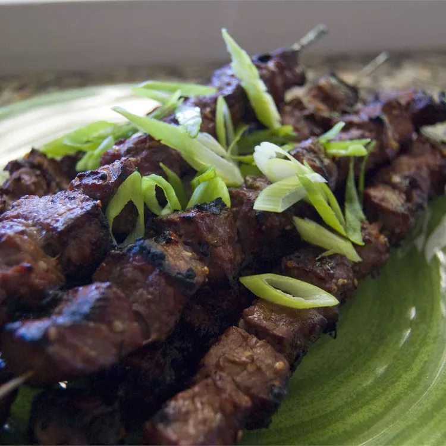

Beef Yakitori
This marinade is delicious with beef, but is great with pork or chicken too. You will need to adjust the cooking time depending upon the meat or poultry you use for the skewers.
-
Prep Time:
15 mins -
Total Time:
4 hrs 30 mins -
Yield:
4 servings -
Cook Time:
15 mins -
Servings:
4
Ingredients
- ½ cup soy sauce
- 2 tablespoons vegetable oil
- 2 tablespoons lemon juice
- 1 tablespoon sesame seeds
- 2 tablespoons white sugar
- 1 clove garlic, minced
- 1/2 teaspoon ground ginger
- 1 pound sirloin steak, cubed
Directions
Step 1
In a glass or plastic bowl, whisk together the soy sauce, oil, lemon juice, sesame seeds, sugar, green onions, garlic, and ginger.
Step 2
Thread the meat onto skewers. (If you are using wooden skewers, soak them 30 minutes first.) Place the skewers in a plastic or glass container just large enough to hold them, and pour the marinade over the meat, turning to coat well. Cover, and chill for a minimum of 4 hours.
Step 3
Preheat grill for high heat, and position grate 5 inches from coals.
Step 4
Brush grate with oil, and place skewers on grill. Grill for 10 to 15 minutes, occasionally turning kabobs to ensure even cooking.